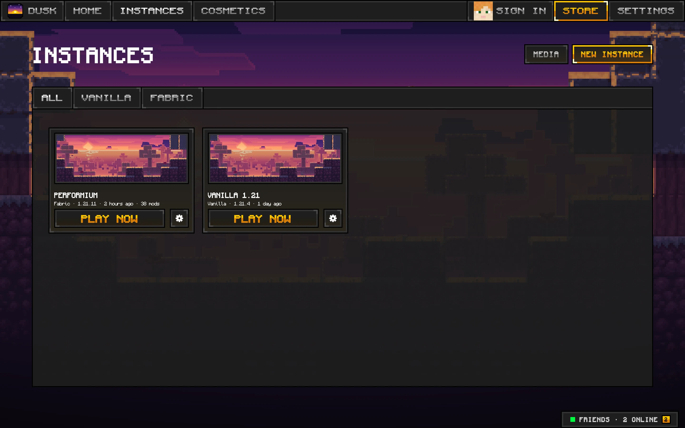
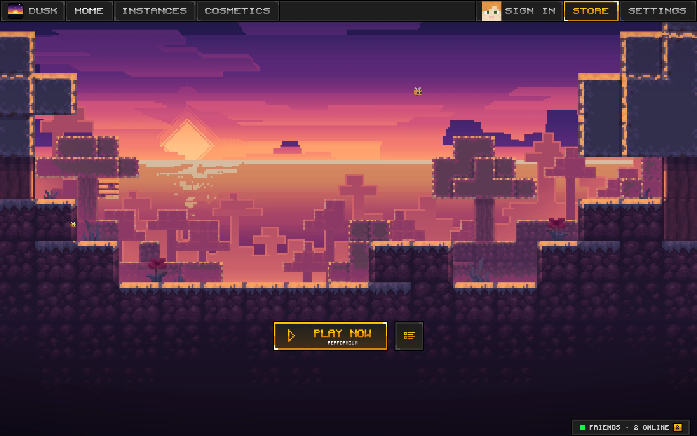
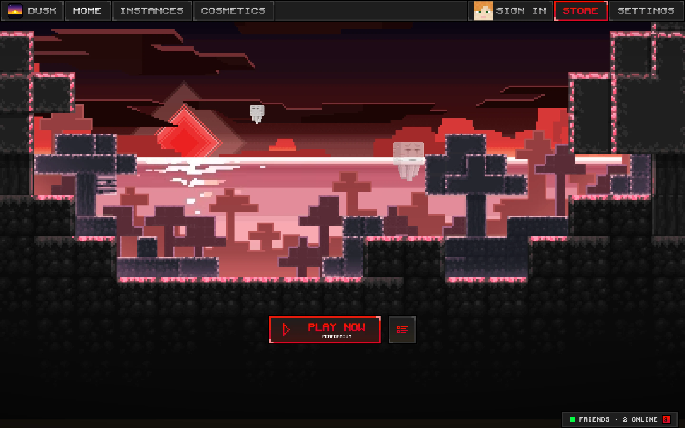
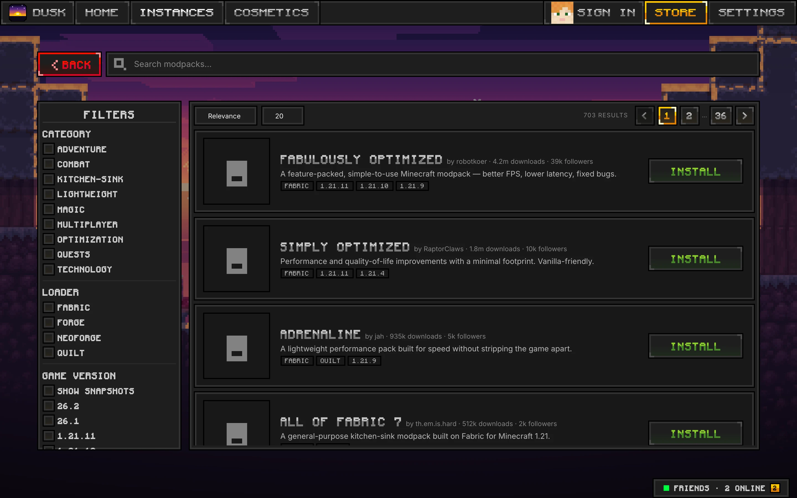
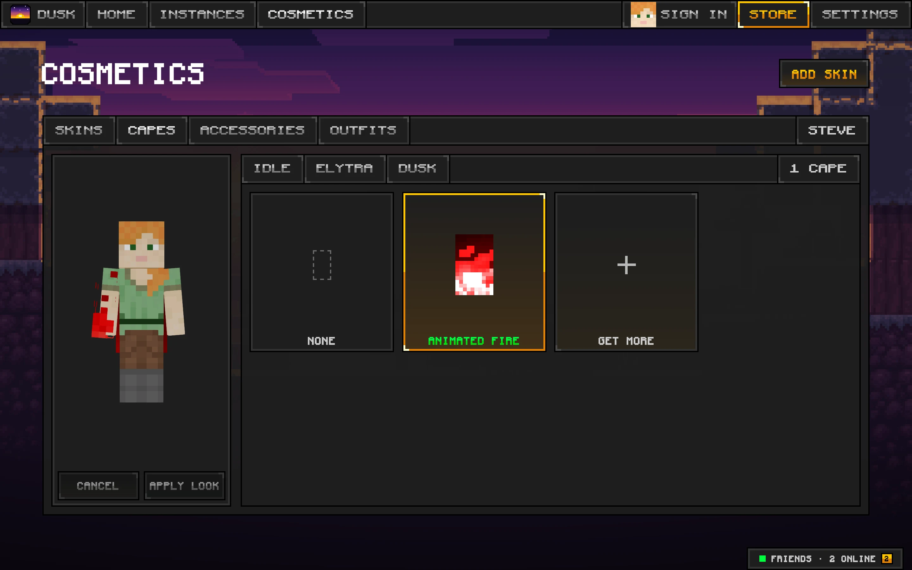

Instances that stay separate
Each instance keeps its own version, mods, and settings. Switch between a 1.21.8 PvP setup and a 26.2 survival world without touching a folder.

Vanilla and Fabric from 1.21 to 26.2, a built-in PvP client with 34 HUD modules, and one-click Modrinth modpacks.


Every release from 1.21 to 26.2, Vanilla or Fabric.
Dusk Client
DuskClient is added to every Fabric instance you start. No separate download, no mod folder shuffling.
Try it: press W, A, S, D or Space, and click the mouse keys.
Right Shift opens the HUD editor in game. Drag, scale, and toggle every module from one window.
Plus Toggle Sprint, Custom Crosshair, Fullbright, Motion Blur, and TNT Countdown on every version. On 1.21.11 and newer you also get Low Fire, Low Shield, Hitboxes, Nametags, Particles, Fog Control, and more.
On the same MacBook Air, Dusk runs past 500 FPS. Lunar never got above 300.
The launcher also stops drawing its menu while Minecraft runs, so those frames go to the game too.
Each instance keeps its own version, mods, and settings. Switch between a 1.21.8 PvP setup and a 26.2 survival world without touching a folder.

Browse modpacks and mods from Modrinth and install them straight into an instance.

Try capes, accessories, and skins on a 3D preview before you wear them. Earn coins from redeem codes and by inviting friends.

Anti-cheats look for injected code and packets a vanilla client would never send. DuskClient does neither, and the source is there for anyone to read.
Read the client codeNo JVM agents, no runtime injection, no rewritten jars. DuskClient loads through the stock Fabric loader like any other mod.
Its mixins touch rendering, the HUD, and input. Nothing sends packets to the server or changes movement.
Every game file is checked against Mojang's sha1 hash before launch, so what runs is what Mojang shipped.
The launcher checks for updates at startup and every six hours, and only installs builds signed with our key.
Latest release
Free on macOS, Windows, and Linux. It keeps itself up to date after the first install.
On a Mac, Homebrew is the easiest way in:
brew install --cask ryz3nplayz/tap/dusklauncher
The macOS build isn't notarized yet. Homebrew clears the warning for you. With the DMG, right-click the app and choose Open the first time.
Couldn't reach GitHub just now. Each link above opens the releases page instead, where every file is listed.
All releases and changelogsYes. The launcher and the client are free, and there are no ads, ever. Cosmetics use coins, which you get from redeem codes and from inviting friends: 500 coins for you and 250 for them.
DuskClient only changes what you see: the HUD, rendering, and input like Toggle Sprint. It never sends packets or touches movement, which is what anti-cheats watch for. Every server still sets its own rules, so check the ones you play on.
Vanilla and Fabric for every release from 1.21 to 26.2. DuskClient has builds for 1.21.1, 1.21.3, 1.21.4, 1.21.5, 1.21.8, 1.21.10, 1.21.11, 26.1, and 26.2.
Yes. Sign in with the Microsoft account that owns Minecraft: Java Edition.
Yes. Fabric instances take any Fabric mods, installed from Modrinth or dropped in by hand. DuskClient sits next to them.
That's Gatekeeper, because the build isn't notarized yet. Install with Homebrew, or right-click the app and choose Open. If that doesn't work, run this once in Terminal:
xattr -dr com.apple.quarantine /Applications/DuskLauncher.appThe launcher checks at startup and every six hours. When a signed update is ready, an update button appears in the top bar. Nothing installs without you clicking it.